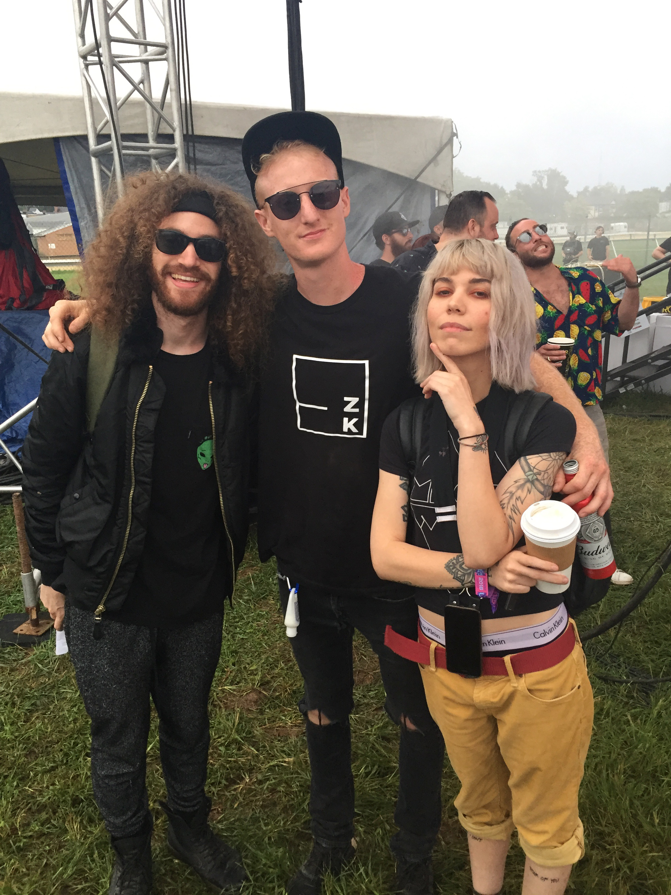

Dan Knots
CURATOR · PROMOTER · DESIGN & CONTENT LEAD
Dan is a Richmond-based designer and DJ who cut his teeth in the DC scene during the 2010s, promoting and managing events at venues like Flash and U Street Music Hall while working with promotion groups like Glow and Nü Androids. Dan is as comfortable running campaigns that live on the street as he is running social media presences. He has tour-managed and artist-managed talent on the festival circuit, booked and furnished national and international headliners, and holds relationships that can land established names when the budget exists. By day he is a staff product designer, and he brings that same research-driven discipline to every lineup, every flyer, and every room: taste, measured.